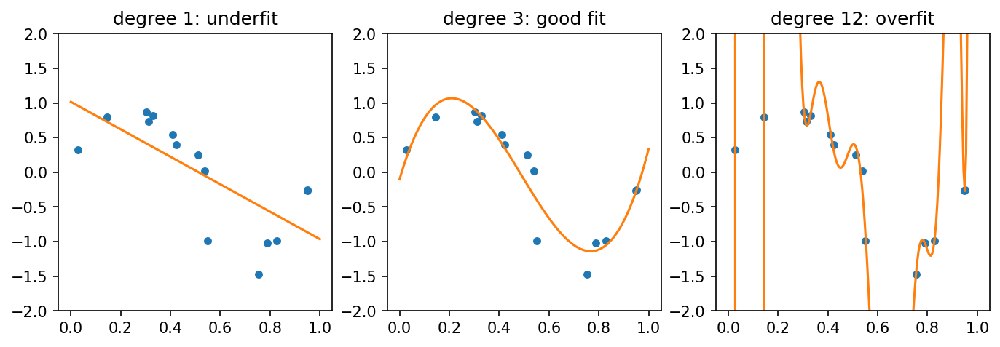
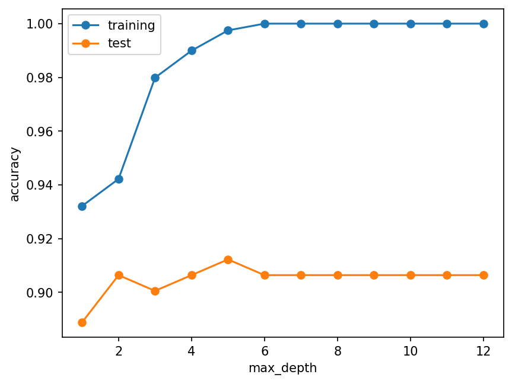

Overfitting, cross-validation, precision and recall
Introduction to Data Science and Machine Learning · Md Mahbub E Noor · University of Barishal
cross_val_score(model, X, y, cv=5) precision_score(y_te, pred)
The same 15 noisy points (invented) fitted with curves of increasing flexibility. The right one follows the trend, not the noise.
import numpy as np
import matplotlib.pyplot as plt
rng = np.random.default_rng(1)
x = np.sort(rng.uniform(0, 1, 15))
y = np.sin(2 * np.pi * x) + rng.normal(0, 0.25, 15)
grid = np.linspace(0, 1, 200)
fig, axes = plt.subplots(1, 3, figsize=(11, 3.3))
for ax, deg, name in zip(axes, [1, 3, 12],
["underfit", "good fit", "overfit"]):
coefs = np.polyfit(x, y, deg)
ax.scatter(x, y, s=18)
ax.plot(grid, np.polyval(coefs, grid), color="tab:orange")
ax.set_ylim(-2, 2)
ax.set_title(f"degree {deg}: {name}")
plt.show()
Breast cancer data. As trees get deeper, training accuracy reaches 100% while test accuracy stops improving or drops.
from sklearn.datasets import load_breast_cancer
from sklearn.model_selection import train_test_split
from sklearn.tree import DecisionTreeClassifier
X, y = load_breast_cancer(return_X_y=True)
X_tr, X_te, y_tr, y_te = train_test_split(
X, y, test_size=0.3, random_state=0, stratify=y)
depths = range(1, 13)
tr, te = [], []
for d in depths:
t = DecisionTreeClassifier(max_depth=d, random_state=0)
t.fit(X_tr, y_tr)
tr.append(t.score(X_tr, y_tr))
te.append(t.score(X_te, y_te))
plt.plot(list(depths), tr, marker="o", label="training")
plt.plot(list(depths), te, marker="o", label="test")
plt.xlabel("max_depth")
plt.ylabel("accuracy")
plt.legend()
plt.show()
WATCH FOR
Silent video: press play, pause any time.
The model learns from it with fit().
We compare settings (k, depth) on it and pick the best.
Used once, at the very end, to report the final score.
Split the training data into 5 parts. Each round, one part validates and four train. Average the 5 scores.
# Every row is used for validation exactly once. # 5 scores instead of 1: # - a more reliable average # - and a sense of how much it varies
| part 1 | part 2 | part 3 | part 4 | part 5 | |
|---|---|---|---|---|---|
| round 1 | VALID | train | train | train | train |
| round 2 | train | VALID | train | train | train |
| round 3 | train | train | VALID | train | train |
| round 4 | train | train | train | VALID | train |
| round 5 | train | train | train | train | VALID |
Next row: arrow key or the ▶ button. Predict it first!
cross_val_score runs all 5 rounds · Use only the training data · Report the mean and the spread · Choose depth by mean CV score, not by test score
from sklearn.model_selection import cross_val_score
for d in [2, 3, 5, 10]:
t = DecisionTreeClassifier(max_depth=d, random_state=0)
scores = cross_val_score(t, X_tr, y_tr, cv=5)
print(d, scores.round(3), round(scores.mean(), 3))2 [0.95 0.95 0.9 0.899 0.962] 0.932 3 [0.962 0.912 0.888 0.899 0.962] 0.925 5 [0.95 0.9 0.912 0.911 0.975] 0.93 10 [0.95 0.888 0.912 0.899 0.975] 0.925
best = DecisionTreeClassifier(max_depth=2, random_state=0) best.fit(X_tr, y_tr) print(round(best.score(X_te, y_te), 3))
0.906
Our Lecture 6 results: TP = 117 spam caught, FP = 5 real messages flagged, FN = 14 spam missed.
# precision: of the messages flagged as spam, # how many really were spam? # recall: of all real spam, # how much did we catch? # F1: one number balancing both
| metric | formula | numbers | value |
|---|---|---|---|
| precision | TP / (TP + FP) | 117 / 122 | 0.959 |
| recall | TP / (TP + FN) | 117 / 131 | 0.893 |
| F1 | 2PR / (P + R) | 2·P·R / (P + R) | 0.925 |
Next row: arrow key or the ▶ button. Predict it first!
| Problem | Worse mistake | Watch especially |
|---|---|---|
| Spam filter | Losing a real message (false positive) | Precision |
| Disease screening | Missing a sick patient (false negative) | Recall |
| Fraud alerts | Both are costly | F1, then discuss |
| Balanced, low-stakes task | Neither stands out | Accuracy is fine |
from sklearn.metrics import accuracy_score, recall_score y_true = [0] * 95 + [1] * 5 y_pred = [0] * 100 print(accuracy_score(y_true, y_pred)) print(recall_score(y_true, y_pred))
95 healthy people, 5 sick. A 'model' always answers healthy. What are its accuracy and recall?
from sklearn.metrics import accuracy_score, recall_score y_true = [0] * 95 + [1] * 5 y_pred = [0] * 100 print(accuracy_score(y_true, y_pred)) print(recall_score(y_true, y_pred))
0.95 0.0
classification_report gives precision, recall and F1 per classfrom sklearn.metrics import classification_report
pred = best.predict(X_te)
print(classification_report(y_te, pred,
target_names=["malignant", "benign"], digits=3)) precision recall f1-score support
malignant 0.843 0.922 0.881 64
benign 0.950 0.897 0.923 107
accuracy 0.906 171
macro avg 0.897 0.910 0.902 171
weighted avg 0.910 0.906 0.907 171from sklearn.neighbors import KNeighborsClassifier
for k in [1, 5, 15, 31]:
s = cross_val_score(KNeighborsClassifier(n_neighbors=k),
X_tr, y_tr, cv=5)
print(k, round(s.mean(), 3))
...Starter code: replace the ... with your own code
Read the last line of an error first. It names the problem.
| What you typed | What Python says | What it means |
|---|---|---|
cross_val_score(best, X_tr, y_tr, scoring="acuracy") | InvalidParameterError: The 'scoring' parameter of cross_val_score must be a str among {'homogeneity_score', 'recall', 'a ... | Misspelt metric name. The message lists valid names. |
recall_score(["a", "b"], ["a", "a"]) | ValueError: pos_label=1 is not a valid label. It should be one of ['a', 'b'] | With text labels, say which one is positive: pos_label="b". |
cross_val_score(best, X_tr, y_tr[:100], cv=5) | ValueError: Found input variables with inconsistent numbers of samples: [398, 100] | X and y must have the same number of rows. |
In the lab you can
Opens in a new tab and works offline. All labs: labs/START_HERE.html
underfit / overfit | Too simple / memorises noise |
cross_val_score(m, X, y, cv=5) | 5 validation scores |
precision | TP / (TP + FP) |
recall | TP / (TP + FN) |
F1 | Balance of precision and recall |
classification_report | All metrics per class |
test set | Used once, at the end |
Due before Lecture 12 · [date]
A model has TP = 40, FP = 10, FN = 20, TN = 130. Compute accuracy, precision, recall and F1.
On wine, choose max_depth with 5-fold cross-validation on the training data, then report the test accuracy once.
For three problems of your choice, say which mistake is worse and which metric you would watch.
Print the 5 CV scores for one model. What are the smallest and largest? Why do they differ?
In 3 sentences: why is choosing settings on the test set a form of cheating?
Watch it again at home to revise.